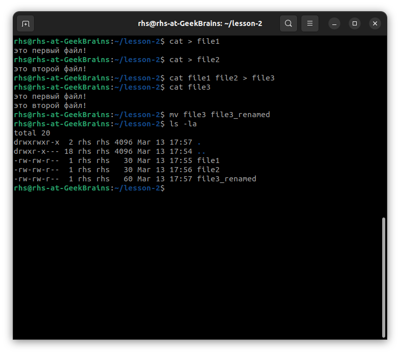
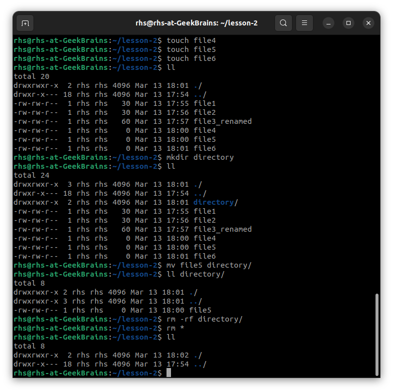
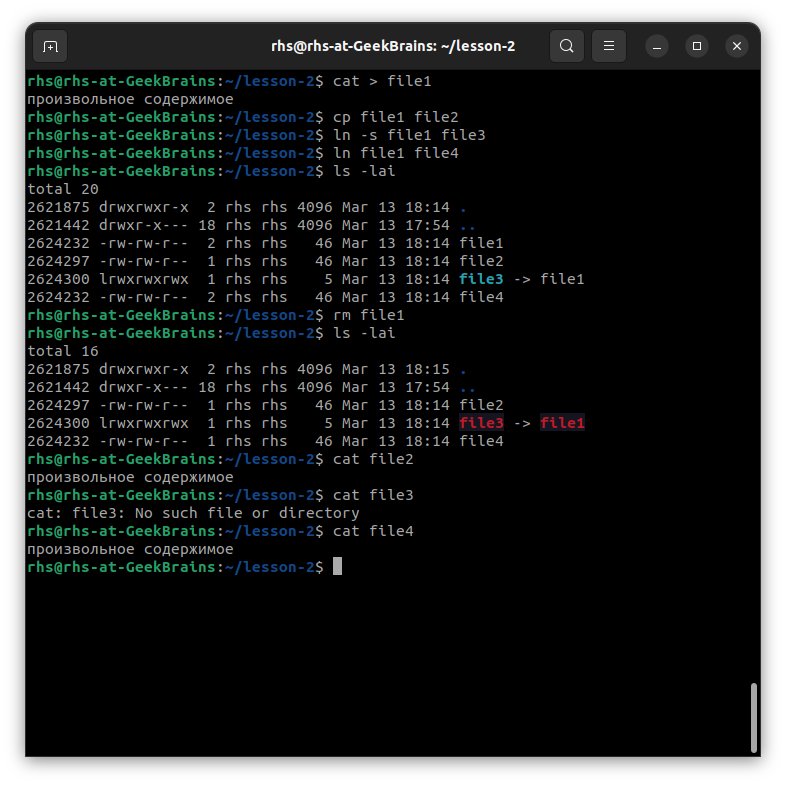
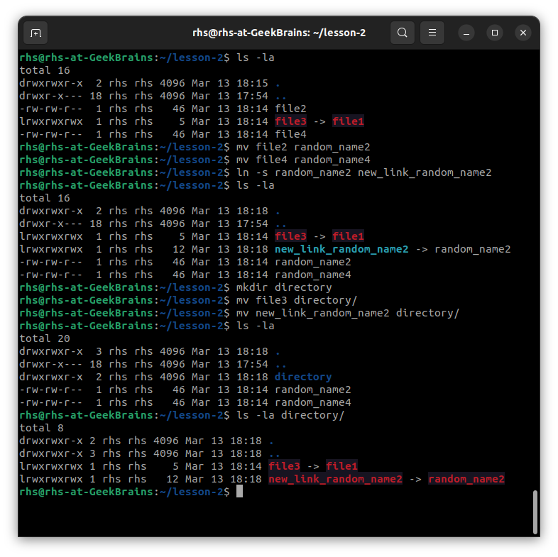

Используя команду cat, создать два файла с данными, а затем объединить их. Просмотреть содержимое созданного файла. Переименовать файл, дав ему новое имя.
Создать несколько файлов. Создать директорию, переместить файл туда. Удалить все созданные в этом и предыдущем задании директории и файлы.
Создать файл file1 и наполнить его произвольным содержимым. Скопировать его в file2. Создать символическую ссылку file3 на file1. Создать жесткую ссылку file4 на file1. Посмотреть, какие айноды у файлов. Удалить file1. Что стало с остальными созданными файлами? Попробовать вывести их на экран.
Дать созданным файлам другие, произвольные имена. Создать новую символическую ссылку. Переместить ссылки в другую директорию.
